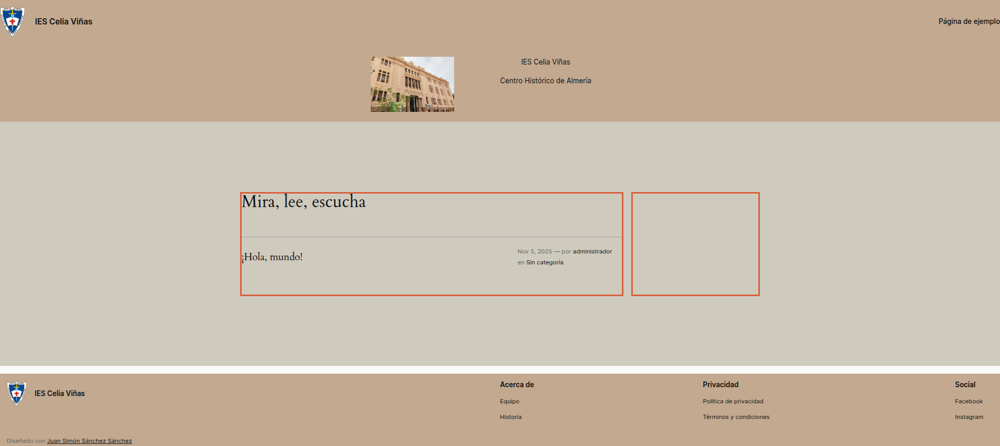
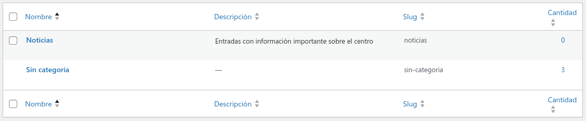
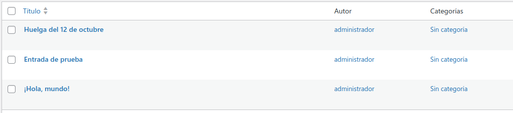

Tarea 3
Categorías, entradas y páginas en Wordpress
FICHA TÉCNICA DE LA ACTIVIDAD ¶
Unidad Didáctica
Unidad 2: Instalación, configuración y utilización de Gestores de
Contenido (CMS)
Nombre de la Tarea
Resultado de Aprendizaje (RA)
Criterios de Evaluación (CE)
Tiempo de Realización Estimado
4 horas (Equivalente a 1 sesión semanal completa de taller)
MÉTODO DE ENTREGA Y
FORMATO
[X] Documento: Documento en formato
[PDF] (UT2_Tarea1_NombreAlumno.pdf) que incluya la
explicación detallada de cada fase y el set de capturas de pantalla
obligatorias solicitado en el desarrollo. El texto debe estar
completamente justificado, con los apartados destacados
en negrita. Cada captura debe llevar un comentario
explicativo inferior sobre la acción de ingeniería realizada.
[ ] Archivos de Código: No se requiere la entrega de
archivos fuente para esta tarea.
[X] Enlace/Texto: El portal debe permanecer
operativo y accesible públicamente a través de la red del centro para su
auditoría directa por parte del profesor en la URL:
http://<TU_IP_FLOTANTE>/iescelia.1. DESCRIPCIÓN GENERAL. OBJETIVOS ¶
2. CONSIDERACIONES PREVIAS ¶
Esta tarea se desarrolla en varios pasos. Partimos de algo parecido a esto. Se ha modificado la distribución de los elementos/grupos, márgenes vertical y horizontal. Se han creado columnas en la parte central para crear una barra lateral, donde se pondrán elementos de WordPress (categorías, enlaces interesantes, etc.). Los colores se pueden cambiar así como utilizar otras imágenes

Hacer una captura inicial, para incluirla en la tarea.
3. ACTIVIDADES A REALIZAR ¶
Paso 1. Categorías: ¶
-
Crearemos al menos 4 categorías de entradas (Noticias, Información, Actividades, Organización) Acceder al Menú Entradas/Categorías. Una de las categorías estará anidada dentro de alguna de las otras (por ejemplo Actividades dentro de Noticias)
Las capturas mínimas necesarias son:
- Captura donde se vean las categorías y toda la información

- Captura donde se vea la creación de la categoría anidada.
Paso 2. Entradas ¶
-
Añadiremos una entrada por cada categoría (se cogerá la información de las entradas de iescelia.org, aunque no tengan que ver con la categoría). Esto se hace en el Menú Entradas/Añadir una nueva entrada. Cada entrada deberá tener un título, párrafos y mínimo una imagen. En cada una de las entradas incluir una lista, una tabla con datos (pueden ser inventados), vídeo de youtube o comentarios. Modificar el texto de los párrafos, cambiando negritas o color de algo en el texto. Crear algún enlace a la página del instituto.
Las capturas mínimas necesarias son:
-
Captura de todas las entradas, donde se ven a la categoría a la que pertenece.

-
Captura de la redacción de una entrada, donde se vea su edición. Puede que por el tema escogido, el elemento "Leer más" aparezca automáticamente y no sea necesaria su inserción manual, verificarlo.
-
Captura de las pantalla donde se visualizan las entradas
-
Captura de la página inicial del sitio
Paso 3. Páginas ¶
En esta parte de la práctica haremos lo siguiente:
-
Crearemos al menos 3 páginas. Se realiza en el Menú páginas/Añadir una nueva página.
-
Cada página deberá tener mínimo una imagen y no permitirá comentarios. Se utilizarán páginas reales del iescelia.org
-
Incluir distintos tipos de elementos (líneas, citas, párrafos, ...)
Haremos las capturas de pantalla oportunas,:
- Captura donde se vean todas las páginas creadas.
- Captura donde se vea como se edita una página (al menos una)
- Captura de las páginas creadas.
4. CALIFICACIÓN ¶
⚠️ IMPORTANTE: El retraso en el plazo de entrega a través de la plataforma, la entrega del documento en formatos editables no permitidos (como .docx), capturas con identificación del alumno/a o la omisión de los enlaces de las fuentes documentales utilizadas penalizará gravemente la nota o invalidará la práctica.
CRITERIOS DE CALIFICACIÓN ¶
| Apartado / Criterio | Muy Bien (100%) | Notable (75%) | Bien (50%) | Mejorable (30%) | Insuficiente (0%) | Peso |
|---|---|---|---|---|---|---|
| Contenido Técnico / funcionalidad | Completo y sin errores | Completo y con errores mínimos. | Mayoría correcto, con algunos errores | Errores notables o faltan partes importantes. | No realizado o no cumple con los requisitos | 50% |
| Procedimiento | Todos los pasos, con mejoras o justificaciones | Sigue todos los pasos correctamente. | Pasos incompletos | Pasos incompletos o erróneos. | No se sigue. | 40% |
| Presentación | Limpio, profesional y creativo. | Limpiol, sigue el formato | Desorganizado o sin formato | Desorganizado y difícil de leer. | Muy pobre o no trabajada | 10% |
En el caso de entregar una documentación la presentación se valorará como sigue ¶
| 1 | 0.75 | 0.5 | 0.3 | 0 | |
|---|---|---|---|---|---|
| Presentación | Documento limpio, profesional y creativo. Sigue el formato (PDF) y cumple rigurosamente con todas las indicaciones de formato(1). | Documento limpio, sigue el formato (PDF) pero no cumple alguna de las indicaciones de formato o de forma básica. | Desorganizado o sin formato adecuado (ej. no es PDF o le falta formato básico). | Desorganizado y difícil de leer. | Muy pobre o no trabajada. |
-
Portada, texto justificado, enunciados/apartados destacados en negrita, comentarios sobre cada una de las capturas o pasos realizados
Si en la documentación se tienen que entregar capturas el criterio será
| Criterio | Puntuación | Realizado correctamente | Realizado con algún error | Realizado con errores | No realizado |
|---|---|---|---|---|---|
| Calidad de la documentación y presentación | 1.5 Puntos | Documento impecable. Las capturas son legibles, se identifica al autor (prompt/user), el texto explica el proceso y se usan formatos adecuados. | Documento bien estructurado. Las capturas son legibles pero falta alguna explicación o la identificación del autor no es clara en todas. | Las capturas son de mala calidad o difíciles de leer. Falta documentación esencial o no se identifica al autor. | No entrega documento o es totalmente ilegible/sin capturas. |